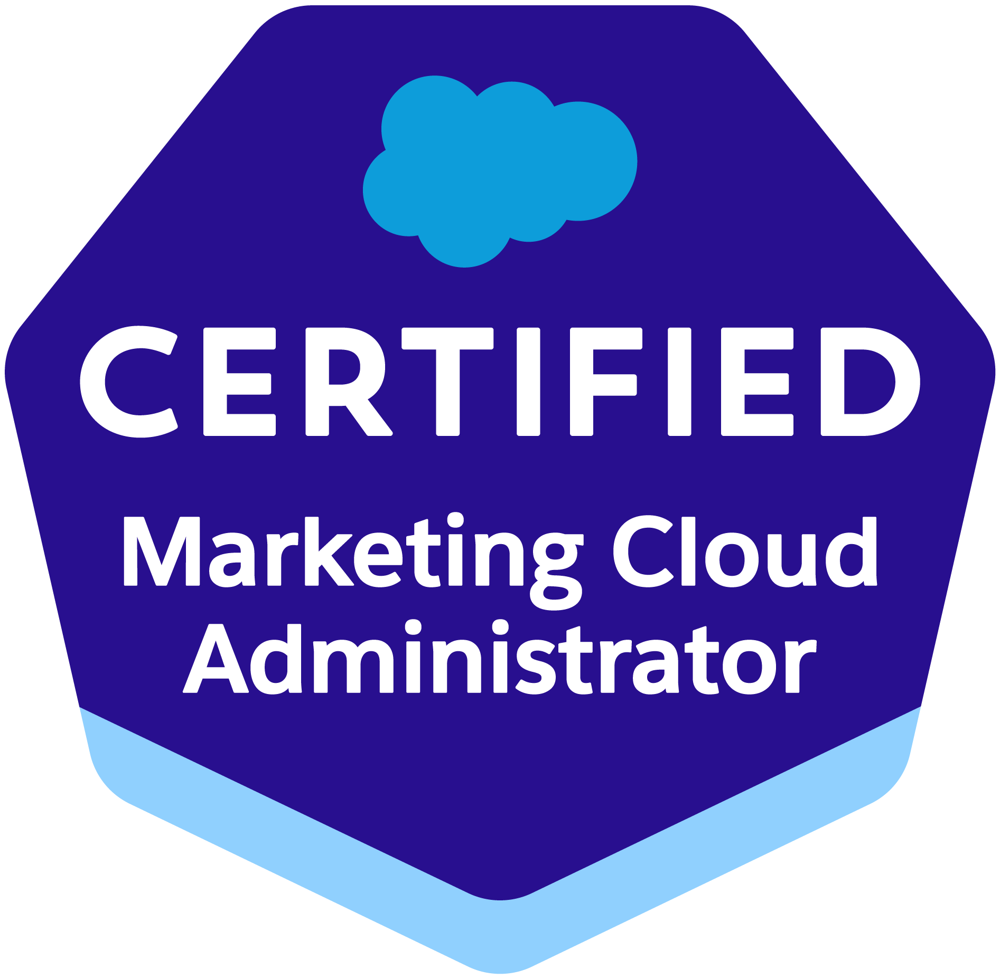

Crystal Brooks
About Crystal Brooks
Crystal Brooks is a 2x certified email marketing expert and 2023 Salesforce Marketing Champion. She is the Salesforce Marketing Cloud Charlotte Community Group co-leader. Crystal's career in email marketing began in 2018 when she decided to combine her passion for data analytics and digital marketing to start her career in email marketing. Her Salesforce Marketing Cloud career began as a Customer Relationship Management Data Analyst and Email Deployment Specialist at Rack Room Shoes. Crystal is now a Senior Technology Implementation Professional at Humana. She support the team by helping document and direct Saleaforce Marketing Cloud and legacy marketing campaigns within the MROC (Marketing Regulatory and Operational Communications) team supporting Pharmacy Marketing - Acquisition.
Crystal is passionate about creating and executing email marketing campaigns using the Salesforce Marketing Cloud platform. She plays a critical role in developing and implementing email marketing strategies that yield results and drive customer engagement.
Throughout her email marketing career, Crystal has developed a great wealth of knowledge and has helped:
- Develop email marketing campaigns in alignment with the overall marketing strategy of her company.
- Create email templates and write content for visually appealing and engaging emails.
- Manage email lists appropriately segmented based on demographic and behavioral data.
- Create and manage automated email campaigns, including welcome emails, abandoned cart reminders, and re-engagement.
- Analyze email marketing performance metrics and make recommendations for optimization.
- Ensure that all email campaigns are compliant with relevant laws and regulations, such as CAN-SPAM and GDPR.
Crystal has extensive experience in Content Builder, Journey Builder, Automation Studio, Email Studio, Analytics Builder, Mobile Connect and Mobile Push within Salesforce Marketing Cloud. She also has a background in data analytics with experience using tools such as Tableau, Google Analytics, Adobe Analytics and MicroStrategy for data visualization.
Her goals this year involve spending more time in Trailhead to sharpen her skills and expand her knowledge in the Marketing Cloud. Study to obtain more certifications, and join more user groups where she can contribution her email marketing knowledge and add value!
Meet Crystal

Certifications
